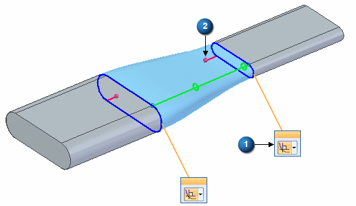
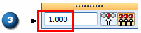
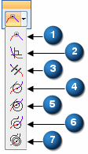
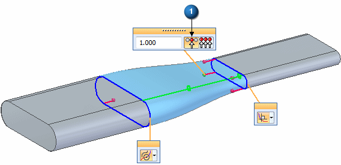
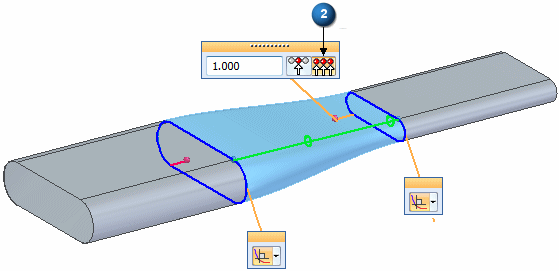

Tangency control handles
Use the tangency control handles to specify the tangency condition at curve and surface boundaries. These handles provide a direct method to manipulate the shape of a surface by specifying different tangency conditions.
The BlueSurf, Bounded, Redefine, Lofted, and Keypoint Curve commands support various continuity and tangency conditions. The tangency control handles provide a common method for each of these commands to control the end conditions.
The handle has two elements:
-
Tangency control handle (1) – Drop-list to control the type of tangent condition
-
Tangent magnitude handle (2) – Drag handle which also supports a magnitude dynamic input box (3).


|
Tangent conditions |
|
|
natural (1) |
 |
|
normal to section (2) |
|
|
parallel to section (3) |
|
|
tangent continuous (4) |
|
|
alternate tangent continuous (5) |
|
|
curvature continuous (6) |
|
|
alternate curvature continuous (7) |
|
There are two tangent magnitude handle options that are available when creating and editing a bluesurf surface, loft protrusion, or keypoint curve.
-
Multiple tangent magnitudes (1)
This option exposes all magnitude handles for the section. You can edit any magnitude handle and the remaining handles are unchanged.

-
Single tangent magnitude (2)
This option exposes a common magnitude handle for the section. You edit a common magnitude handle and the remaining section magnitude handles have the same value.

You can drag the handles or type a magnitude value in the dynamic input box.
Tangency handle display
Tangency handle display can be turned on or off in each command.
-
BlueSurf command — Use the on or off button in the BlueSurf-Surface Visualization dialog box.
-
Bounded command — Use the Hide Tangency Control Handles button on the Bounded command bar. The button appears while in the Face Tangency step.
-
Redefine command — Use the Hide Tangency Control Handles button on the Redefine command bar. The button appears while in the Tuning step.
-
Keypoint Curve command — Use the Hide Tangency Control Handles button on the Keypoint Curve command bar. The button appears while in the End Conditions step.